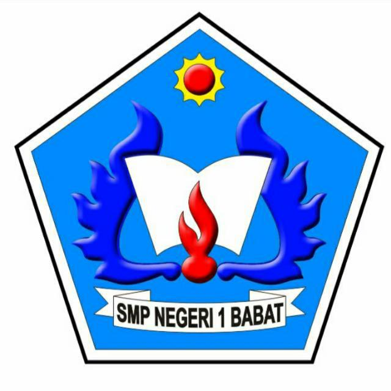
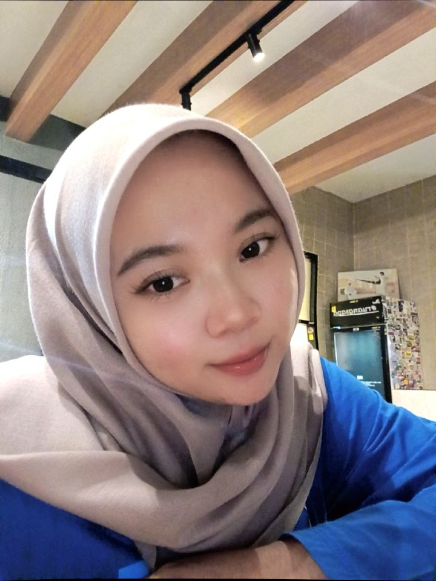

Menjelaskan pengertian sistem bilangan serta perbedaan sistem bilangan desimal (basis 10) dan biner (basis 2) dengan tepat.
Mengonversi bilangan desimal ke bentuk biner dan sebaliknya menggunakan metode pembagian dan perkalian nilai tempat secara benar.
Menganalisis nilai tempat (place value) setiap digit pada bilangan biner 8-bit dan mengaitkannya dengan hasil desimalnya.
Menjelaskan alasan komputer menggunakan sistem bilangan biner dalam merepresentasikan dan mengolah data secara digital.
Sistem bilangan adalah cara menuliskan angka menggunakan sejumlah simbol tertentu (basis/radix), seperti basis 10 dan basis 2.
Menggunakan 10 simbol angka (0–9). Setiap posisi digit bernilai tempat kelipatan pangkat 10, sistem yang biasa kita pakai sehari-hari.
Hanya menggunakan 2 simbol (0 dan 1). Setiap posisi digit bernilai tempat kelipatan pangkat 2 — bahasa dasar seluruh komputer.
Bagi bilangan desimal dengan 2 secara berulang, catat sisa baginya, lalu baca sisa dari bawah ke atas untuk mendapatkan bentuk binernya.
Kalikan setiap digit biner dengan nilai tempatnya (1, 2, 4, 8, 16, ...), lalu jumlahkan seluruh hasil perkalian tersebut.
Komputer memakai biner karena komponen elektroniknya hanya mengenal 2 kondisi: hidup (1) dan mati (0), dasar dari bit dan byte.
